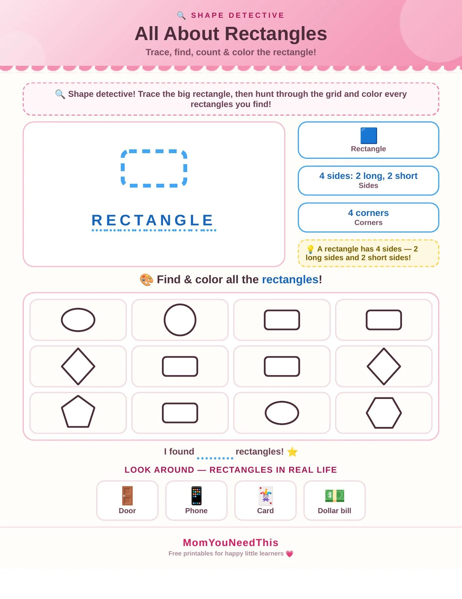

Rectangle Activities For Kids Trace, Color & Learn All About Rectangles
Quick Answer
This free printable rectangle activity is designed for toddlers and preschoolers ages 2–5. A rectangle has 4 sides — two long, two short — and 4 corners, and it is very likely the most common shape in your house: doors, books, phones, rugs and the page you are about to print are all rectangles. The worksheet includes hands-on tracing, coloring and identification exercises that build early geometry skills through play. Download and print at home with no signup needed — no account required, just print and start learning.
Help your child discover rectangles with printable activities that build shape recognition, comparing sides, and early geometry skills.
▭ Learn About a Rectangle
The rectangle's rule is a pairing: opposite sides are equal. Two long sides face each other, two short sides face each other, and the four corners join them up. That is the whole definition, and it is a satisfying one for children because it explains the shape's stretched look — a rectangle is what you get when a square's sides are pulled longer in one direction.
Expect the square-versus-rectangle question constantly while you work, and welcome it: it is the most useful confusion in early geometry. The test that settles it lives on this page — measure the sides. All four equal means square; two long and two short means rectangle. The worksheet's identification exercises mix the two shapes deliberately, so your child practices the test, not just the name.

🖨️ Download Your Free Rectangle Printable
Trace the rectangle, color it in, and hunt for rectangles around your home. Print it out, grab the crayons, and you're ready — no signup needed.
⬇️ Download Free Printable 🖨️ Print(opens in new tab)🎁 Free printable for toddlers & preschoolers
🔍 Rectangle Hunt Around Your Home
Turn learning into a game! Walk around your home together and spot things shaped like a rectangle — doors, books, phones, and rugs. The rectangle hunt is the easiest hunt of all the shapes, because rooms are built from rectangles: the door, the window frame's outer edge, the TV, the tabletop, the book in your hand. Set a counting challenge — can you find ten before the timer ends?
Add the sorting twist that makes this hunt educational gold: every time your child claims a rectangle, ask “or is it a square?” and measure. Sticky notes and crackers fail the rectangle test (they are squares); doors and books pass. A house quickly sorts itself into two piles of shapes, and your child did the sorting with a rule, not a guess.
💡 Why Learn About the Rectangle?
Rectangles teach comparison. Where the triangle teaches counting and the square teaches equality, the rectangle teaches “longer and shorter” — relative measurement, the beginning of all measuring. A child who can say which side is long and which is short, and find the matching opposite side, is doing real geometric reasoning with vocabulary they already own.
The rectangle is also the shape of pages, screens, doors and rooms — the frame around most of a child's visual world. Recognizing it, drawing it, and distinguishing it from its square cousin builds the visual discrimination that reading readiness quietly depends on: letters, after all, are mostly arrangements of lines in rectangular spaces, and telling similar forms apart is the whole game.
📚 Keep Exploring Shapes
Discover more free 2D shape activities, printables, and learning ideas created for busy parents.
🎁 Back to 2D Shape Activities